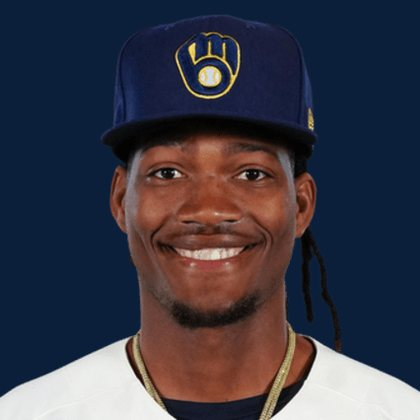

BASEBALLKEEP
Dynasty · Redraft · Diamond
Player File · RP MIL

Abner Uribe
#45 · RP · Milwaukee Brewers · age 26 · B/T RR · 6' 3" / 205 lbs · MLB debut 2023 · Santo Domingo, Dominican Republic
Pitching
| Year | G | GS | W | L | SV | HLD | IP | K | BB | HR | ERA | WHIP | K/9 |
|---|---|---|---|---|---|---|---|---|---|---|---|---|---|
| 2026 | 49 | 0 | 4 | 2 | 6 | 18 | 48.1 | 48 | 18 | 3 | 2.05 | 1.03 | 8.94 |
| 2025 | 75 | 0 | 3 | 2 | 7 | 37 | 75.1 | 90 | 27 | 4 | 1.67 | 1.04 | 10.75 |
Plus
- Saves board #30.
- SV+H board #40.
Minus
- Reliever volatility: the ninth can vanish in a week.
- Keep #218 is the edge of the 300. Deep-league / taxi-squad more than a foundation chip.
BaseBallKeep Take
Abner Uribe is #218 on BaseBallKeep's overall dynasty 300, a 23-source mix anchored by RotoGraphs (Aug 14) and The Dynasty Guru points list (Aug 10). RP for MIL. BK's Pitchers #77. Rest-of-season redraft #228. MLB since 2023. From Santo Domingo / Dominican Republic. Bats R, throws R.
BK Value on this rank is 127. Same decaying curve as football: 12,000 at 1.01, a late first a fraction of that. If someone is asking for two firsts, run the calculator. 2026 line: 2.05 ERA, 1.03 WHIP, 48 K in 48.1 IP.
The 23-board average is 216.0 on 2 lists that actually ranked him — unranked sources are skipped, never treated as 999. High 208, low 224.
Dynasty pays the next five years. Redraft pays September. If those two ranks diverge, that is the instruction: hold the kid or cash the veteran.
How to use him: roster for the category, not the name. If the ninth moves, so does this file. Check the Wire before you burn a claim on a setup man.
Flags fly forever. We will refresh this file with The Keep. September baseball is a proving ground, not a coronation.
Every Board
Spread 208–224 · 2 sources
| Source | Rank |
|---|---|
| TDG Points | 208 |
| RotoGraphs Model | 224 |
On The Keep nearby — Caleb Durbin (#216) · Edward Cabrera (#217) · Ryan Pepiot (#219) · Gleyber Torres (#220)
Same position on the 300 — Cade Smith #84 · Grant Taylor #95 · Louis Varland #115 · Mason Miller #122 · Jhoan Duran #141 · David Bednar #153
All players · The Keep · The Lineup · Pitchers · Calculator